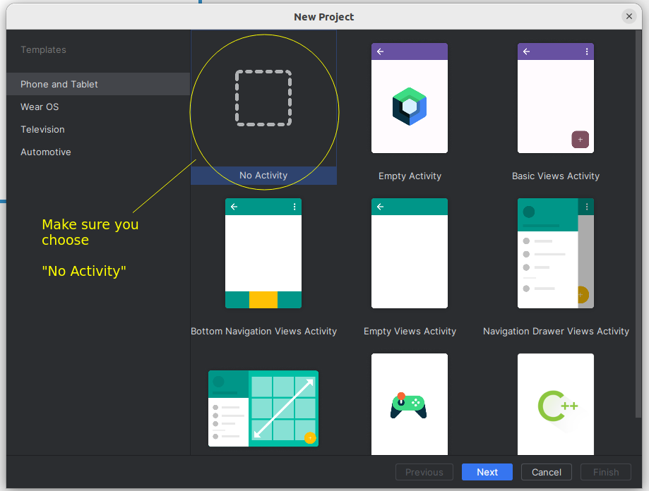
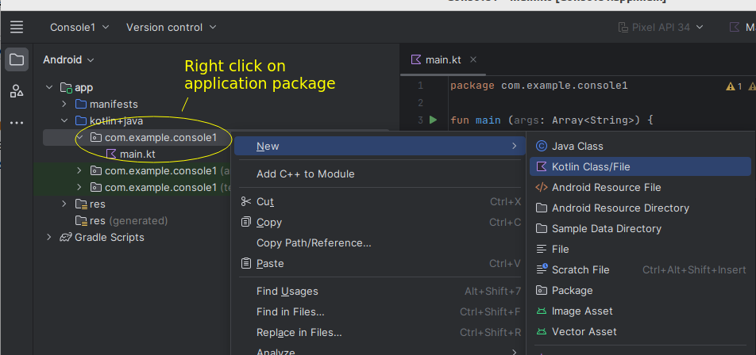
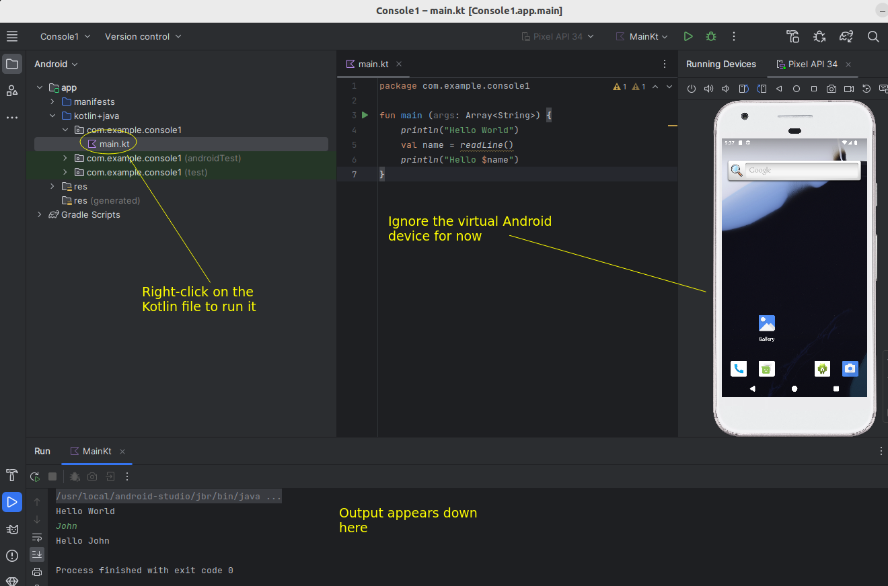

For this introductory, non-Android Kotlin session, we are going to be using Android Studio, as it allows us to write console programs as well as Android apps. Launch Android Studio and then create a new project. Ensure you select No activity, as shown below:

The project will be initialised but will have no source code files. You will need to add a Kotlin source code file to the project, do this as shown below:

Then, compile and run the Kotlin program by right-clicking on it. The output will appear at the bottom of the screen.

Write a program which uses a "when" statement to print the grade (A, B, C, D, E, or F) equivalent to a given percentage. Make the 'when' act as an expression, i.e. you should get it to return a value and then print that value. Grades are as follows:
A - 70-100 B - 60-69 C - 50-59 D - 40-49 E - 30-39 F – 0-29The program should also display "Error - invalid percentage" if the percentage is below 0 or greater than 100. Hint: you can use the "in" keyword with a range (e.g. 1..10) as a condition inside "when".
Create a Car class. It should have properties for make, model, engine capacity (cc), top speed, and current speed (mph or km/h - up to you). The first four should be passed in via the constructor. Set the current speed to 0 when the car initialises. Add accelerate() and decelerate() methods. These should increase and decrease the speed by a value passed into the method as a parameter. decelerate() should ideally check to make sure that the speed doesn't go below 0 and accelerate() should ideally check to make sure that the speed doesn't go above the top speed. Add a toString() method to return a string representation of the car. You need to use the override keyword with this, because it’s overriding the superclass method, i.e.
override fun toString(): String {...
}
Write a main() function. In main(), try creating two car objects. Display the car
objects, accelerate them, display them again, decelerate them again, and
display them once more
You need to look at the further notes to answer this question. Create an inheritance hierarchy involving employees, programmers and managers.
Enhancement: change Programmer so that the favourite language string is replaced by an array of strings for multiple favourite languages (e.g. Kotlin, Java, PHP, Python and JavaScript).